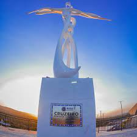
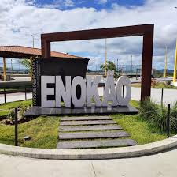
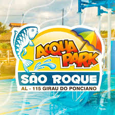

Conheça Girau do Ponciano
Girau do Ponciano é um município brasileiro localizado no estado de Alagoas. Pertencente à Mesorregião do Agreste Alagoano e à Microrregião de Arapiraca, localiza-se a oeste da capital do estado, distante desta cerca de 159 quilômetros. Está a 1 367 quilômetros de Brasília, a capital federal, a 24,7 quilômetros da cidade de Arapiraca, a segunda maior cidade de Alagoas e a 28,1 quilômetros de Traipu, que fica às margens do Rio São Francisco. Sua área é de 504,3 km², sendo que 1,2970 km² estão em perímetro urbano.A cidade Girau do Ponciano é uma mistura perfeita para agradar tanto os que procuram um pouquinho de descanso, quanto quem quer um pouco de agito.
Sua atrações principais são:
CRUZEIRO PARQUE CULTURAL
Este espaço foi cuidadosamente pensado para acolher e celebrar as manifestações de fé, cultura, lazer e convivência comunitária. Completamente revitalizado, ele agora conta com: • Capela aberta, pronta para receber diversas celebrações e momentos de espiritualidade; • Mirante deslumbrante, perfeito para contemplar a beleza da nossa paisagem; • Esculturas e um marco especial, que refletem nossa fé e identidade cultural; • Palco multifuncional, dedicado a apresentações culturais e eventos comunitários; • Praça com área verde, um convite ao lazer, descanso e conexão com a natureza; • Estacionamento e banheiros, garantindo maior conforto e acessibilidade a todos.
ENOKÃO PARQUE DESPORTIVO
Com a inauguração do Enokão Parque Desportivo, que antes era um campo de futebol, criado por Enoque de Barros, prefeito de Girau do Ponciano em meados da década de 1980, e que hoje se transformou em um centro de esportes e praça para as crianças, Girau continua com o seu programa de modernização.
ACQUA PARK SÃO ROQUE
mergulhe e se divirta no Acqua Park São Roque! O maior parque aquático do Agreste Alagoano! Diversão garantida com shows ao vivo, piscinas incríveis e um ambiente totalmente pensado para o seu lazer!
